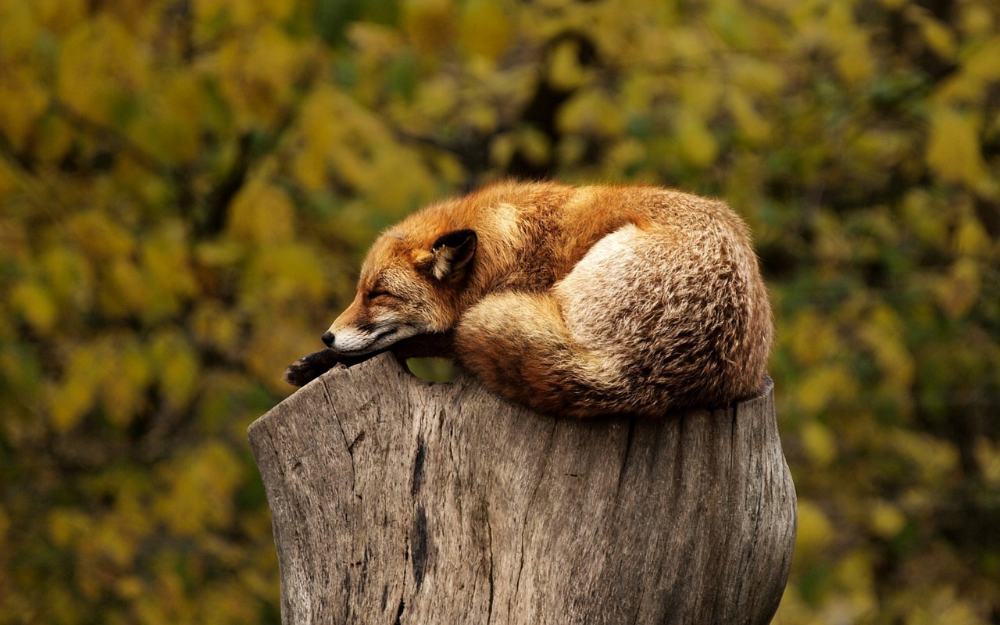
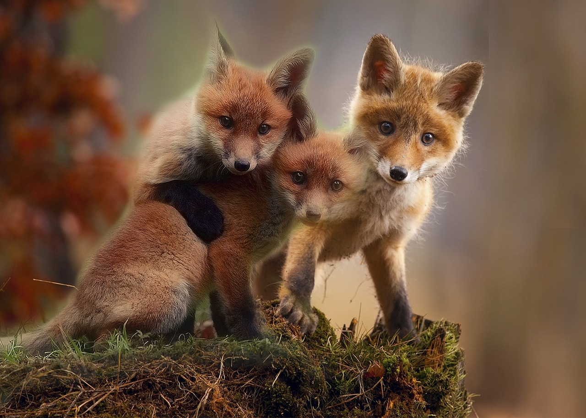
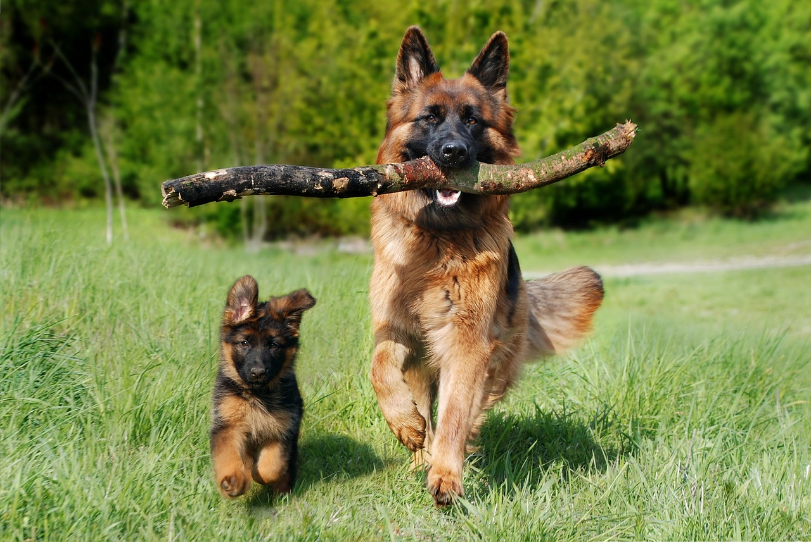
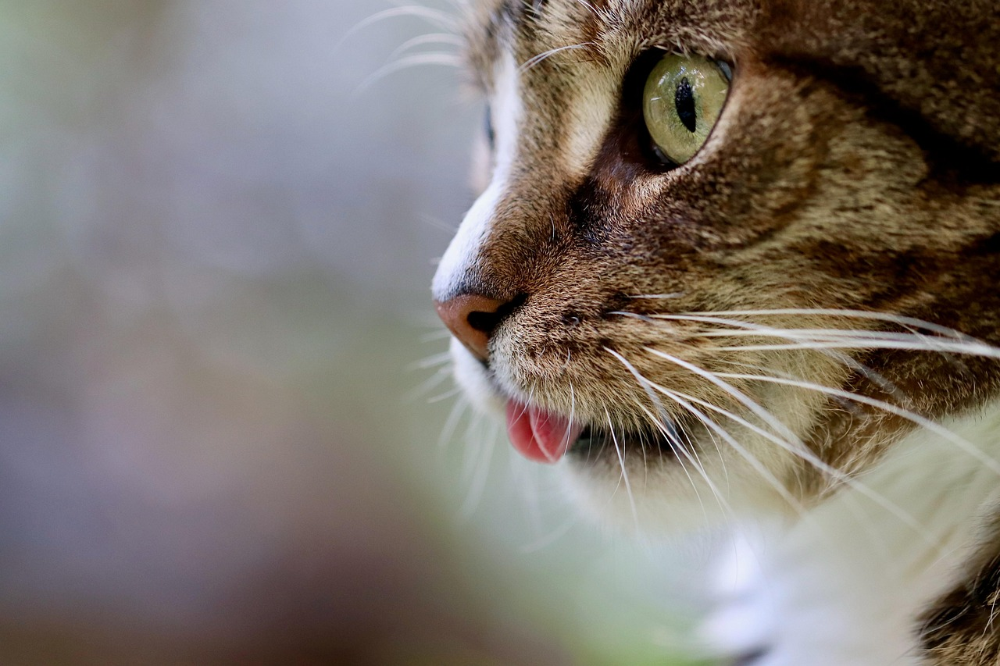

V chovatelské stanici Triple Ray propojujeme tři zdánlivě odlišné světy – věrné a pracovité psy, elegantní domácí kočky a fascinující, vysoce inteligentní lišky. Naším hlavním krédem je absolutní respekt k přirozeným potřebám každého druhu. Veškerá zvířata u nás vyrůstají v harmonickém, podnětném a bezpečném prostředí, kde klademe prvořadý důraz na individuální přístup, prvotřídní zdravotní péči a hlubokou socializaci od prvních dnů jejich života. Cílem naší práce je přivádět na svět zdravé, psychicky vyrovnané a sebevědomé jedince.
Chov lišek v lidské péči je náročný obor, který vyžaduje hluboké znalosti jejich chování, specifické legislativní zázemí a maximální zodpovědnost. Našim liškám poskytujeme prostorné, bezpečně zabezpečené venkovní výběhy s množstvím podnětů k přirozenému zkoumání a hře. Jídelníček je sestaven na míru pod veterinárním dohledem – skládá se z čerstvého masa, vysoce kvalitních bílkovin a speciálních vitamínových doplňků nezbytných pro jejich vitalitu a zdravý vývoj srsti.


Německý ovčák je všestranné plemeno, které ke své spokojenosti potřebuje silné pouto s člověkem, dostatek fyzické aktivity a zejména psychickou stimulaci. V naší stanici dbáme na striktně vybrané chovné linie s důrazem na pevné zdraví, bezchybnou povahu a pracovní předpoklady. Štěňata již od narození procházejí propracovaným programem rané socializace – jsou zvyklá na ruch domácnosti, různé zvuky, manipulační cvičení i kontakt s ostatními zvířaty, což z nich dělá nebojácné a spolehlivé parťáky pro rodinu i služební kynologii.
Naše kočky jsou plnohodnotnými členy rodiny, kteří žijí v přímém a laskavém kontaktu s lidmi. Klademe maximální důraz na klidné prostředí bez stresu, špičkovou superprémiovou stravu přizpůsobenou věku a kondici, a pravidelný veterinární screening včetně genetických testů na dědičná onemocnění. Samozřejmostí jsou bezpečné prolézačky, škrabadla a možnost chráněného venkovního výběhu, kde mohou uspokojovat své přirozené lovecké a zvídavé instinkty v naprostém bezpečí.
